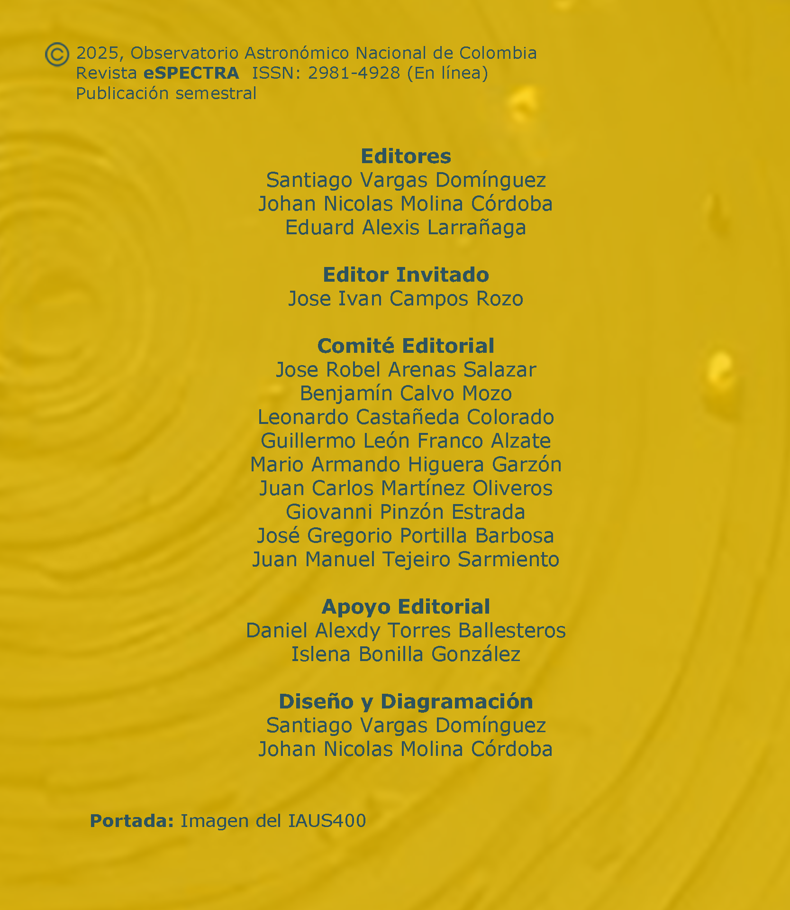

Revista deInvestigación
Presentamos un nuevo número de eSPECTRA, la revista semestral dedicada a la investigación en Astronomía, Astrofísica, Cosmología y Ciencias Afines, que destaca los aportes de estudiantes y jóvenes investigadores, reforzando nuestro compromiso de fomentar estas disciplinas en el ámbito nacional.
Esta edición reúne una selección especial de resúmenes de las contribuciones presentadas durante el IAU Symposium 400, titulado “Solar and Stellar Multi-Scale Activity”, un evento de alcance internacional que congregó a expertos de todo el mundo para discutir los avances más recientes en el estudio de la actividad solar y estelar a múltiples escalas. Desde procesos dinámicos en la atmósfera solar hasta la variabilidad magnética en otras estrellas, pasando por el impacto de estos fenómenos en el clima espacial y el desarrollo de instrumentación de vanguardia, este simposio constituyó un espacio de intercambio entre investigadores consolidados y nuevas generaciones de científicos. eSPECTRA se enorgullece de difundir este valioso compendio de conocimientos, que fortalece la comunidad científica y proyecta a Colombia en la escena astronómica internacional.
La Revista

Revista eSPECTRA, Volumen 3, Número 2 (2025)
Artículos de Investigación
Reseñas de Eventos

ARTÍCULOS DIVULGATIVOS
Ellas también miraron al cielo
Por: Hernan David Munar Perez. Miembro de Cúmulo
Actualmente, cuando aprendemos sobre ciencia y sus ramificaciones, siempre escucha- mos los nombres de Galileo, Newton o Kepler. Estas figuras han quedado grabadas en la historia de la ciencia. Sin embargo, ¿qué ocurrió con las mujeres que dedicaron su esfuerzo al avance de la astronomía? Sus nombres, en la mayoría de los casos, permanecen en el olvido, a pesar de sus valiosas contribuciones.
Actualmente, cuando aprendemos sobre ciencia y sus ramificaciones, siempre escucha- mos los nombres de Galileo, Newton o Kepler. Estas figuras han quedado grabadas en la historia de la ciencia. Sin embargo, ¿qué ocurrió con las mujeres que dedicaron su esfuerzo al avance de la astronomía? Sus nombres, en la mayoría de los casos, permanecen en el olvido, a pesar de sus valiosas contribuciones.

Melodías cósmicas II: Así suenan las estrellas
Por: J. D. Acosta Calderón, J. P. Garavito Muñoz. Estudiantes de la Universidad Nacional de Colombia y miembros de Cúmulo
Es bien sabido que las estrellas emiten luz, de la cual se puede obtener valiosa información. Dentro de esta luz se encuentra uno de los fenómenos más interesantes que surge al estudiar la luz de las estrellas: la magnitud fotométrica. Podemos empezar a hablar de magnitudes partiendo de un par de ideas intuitivas: Cuando miramos al cielo a simple vista, notamos que no todos los astros y cuerpos celestes brillan de la misma forma. Algunos brillan con m´as intensidad que otros, y también se perciben en distintos colores.
Es bien sabido que las estrellas emiten luz, de la cual se puede obtener valiosa información. Dentro de esta luz se encuentra uno de los fenómenos más interesantes que surge al estudiar la luz de las estrellas: la magnitud fotométrica. Podemos empezar a hablar de magnitudes partiendo de un par de ideas intuitivas: Cuando miramos al cielo a simple vista, notamos que no todos los astros y cuerpos celestes brillan de la misma forma. Algunos brillan con m´as intensidad que otros, y también se perciben en distintos colores.
LA ENTREVISTA
La travesía científica de Julián Alvarado Gómez
A partir de este número tendremos una nueva sección, donde conversaremos un personaje invitado. Nuestro primer invitado es el astrofísico colombiano Julian Alvarado Gómez, quien se desempeña como investigador en el Instituto Leibniz de Astrofísica de Potsdam (AIP) en Alemania. Conoceremos algunos detalles sobre su trayectoria y sus intereses de investigación.
Contáctanos
Aquí nos encuentras
¡Queremos mantenernos en contacto contigo!
Síguenos en nuestras redes sociales y metaverso
Síguenos en nuestras redes sociales y metaverso